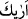
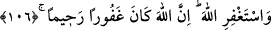
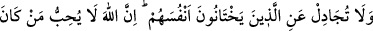

bildirdiği ve vahyettiği şekilde demektir. Âyetteki “
” lafzı, gözle görme ve ilim
mânâsında değildir. Bilakis bu kelime îtikad ve marifet mânâsındadır. Çünkü bu bilgi,
kuvvet, ortaya çıkma ve şüpheden uzak olma bakımından görmek gibi olduğundan
zikredilen marifet, “rü’yet” yâni görme olarak ifâde edilmiştir. “sana Kitâb’ı” Kur’ân’ı
“hak ile indirdik” sen onunla hükmet ve “hâinlerden taraf olma!” onlar için yahûdîye
hasım olup onları müdâfaa etme. Onlar, Tu’me ve ona yardım edenlerdir. Rivâyet
edildiğine göre kavmi, câhiliye döneminde hırsız olduğu için bu hırsızlığın Tu’me’nin
işi olduğunu biliyordu. Fakat onlar gece boyunca plan kurup hırsızlık cezâsını
Tu’me’den defetmek için yahûdînin aleyhinde şâhitlik etmeyi kararlaştırdılar. Bundan
dolayı Allah onların hepsini hıyanetle vasfetmiştir. Yâhut da “hâinler”le kastedilen
Tu’me ve onun yolundan giden herkesdir.
106- Allah’tan mağfiret dile. Şüphesiz Allah çok bağışlayan esirgeyendir.
Onların şâhitliklerine güvenerek hüküm verme niyetinden dolayı “Allah’tan mağfiret
dile.”
Şeyhzâde şöyle demiştir: “Rasûlullah her ne kadar Allah katında mazur ise de,
yapmış olsa hatâ kabul edilecek olan bu hükme niyetlenme kendisinden sâdır olduğu
için Allah Teâlâ ona bu özürden bağışlanmayı istemesini emretmiştir. Çünkü iyilerin
(ebrâr) hasenâtı, Allah’a yakın kulların (mukarrabîn) seyyiâtı mesâbesindedir.
“Şüphesiz Allah çok bağışlayan, esirgeyendir.” Kendisinden bağışlanma dileyen
kimseye bağış ve rahmeti boldur.
107- Kendilerine hıyânet edenleri savunma; çünkü Allah dâimâ hâinlik yapıp
günah işleyenleri sevmez.
“Kendilerine hıyânet edenleri savunma.” Hâinlik, günah işleyerek kendine haksızlık
etmek anlamına gelir. Onun için kendilerine hıyânet etmedikleri halde âyette ettiklerinin
söylenmesi, hıyânetlerinin zararının sonunda yine kendilerine dönecek olmasındandır.
Nitekim haksızlık edene de “Haksızlık eden, kendisine eder” denilir. Bu kısım,
“Haddâdî Tefsîri”nden alınmıştır.
Kendilerine hıyânet edenlerden kasıt, ya Tu’me ve benzerleridir ya da o ve ona
yardım eden, suçsuz olduğuna şâhitlik eden kavmidir. Çünkü onlar günah ve hıyanette